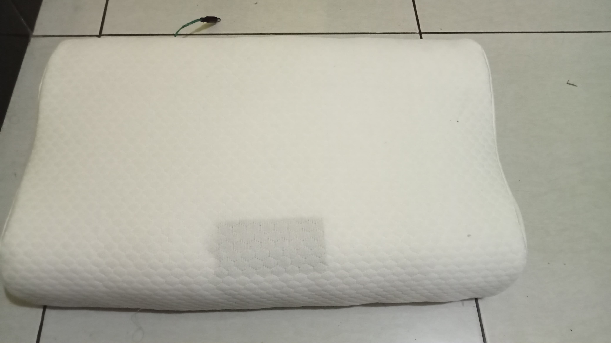
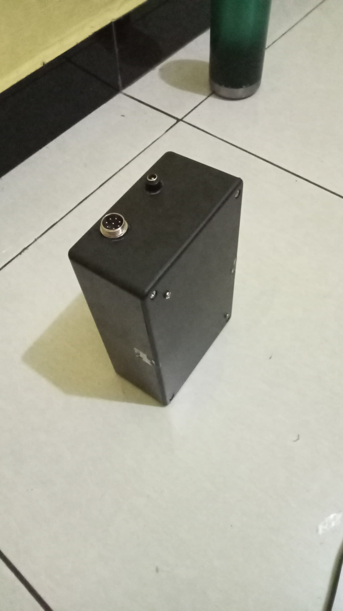
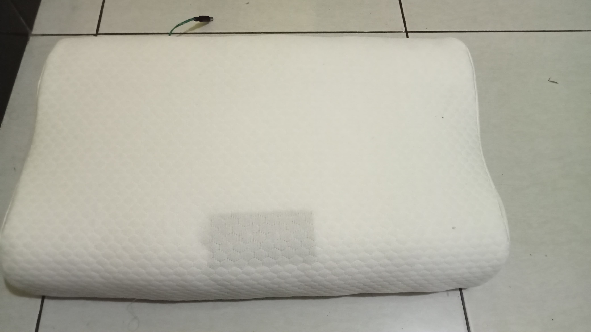
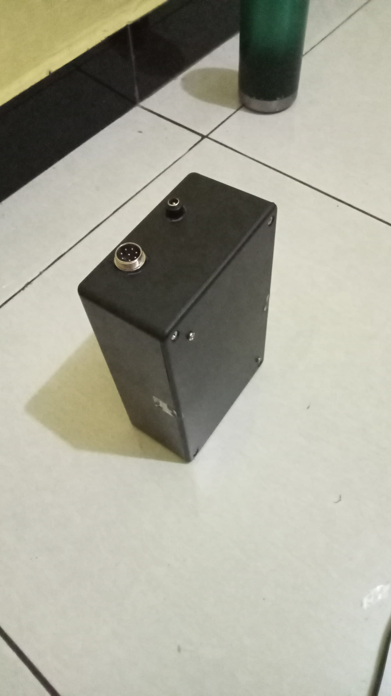

IoT Heated Pillow with Music Speaker
A smart comfort solution with temperature control and IoT integration
 



Project Overview
This project combines comfort and technology by creating a heated pillow with integrated music capabilities. Using an ESP32 microcontroller, the pillow features adjustable temperature control, music playback through embedded speakers, and IoT connectivity for remote control via smartphone or other devices.
The system includes temperature sensors for precise heat regulation, ensuring both comfort and safety. The IoT integration allows users to control temperature settings and music playback remotely, with options to set timers and create comfort profiles.
Key Features:
- Adjustable heating with temperature control
- Integrated music speakers for relaxation
- ESP32-based IoT connectivity
- Mobile app and web dashboard for remote control using Ubidots
- Safety features including using fuse
Development Timeline
Project Conceptualization
Initial research and planning for the IoT Heated Pillow. Defined core features and technical requirements.
Component Selection & Procurement
Selected components based on requirements and ordered parts including ESP32, temperature sensors, heating elements, and speakers.
Prototype Development
Created initial prototype circuit with ESP32 and temperature sensors. Began testing heating elements.
Integration of Audio Components
Added speaker system and integrated with ESP32. Tested audio quality and power requirements.
IoT Integration & Testing
Developing IoT functionality with WiFi connectivity and mobile app control interface. Testing temperature control algorithms.
Project Components
| Component | Specification | Quantity | Purpose |
|---|---|---|---|
| ESP32 Development Board | ESP32-WROOM-32D with built-in WiFi & Bluetooth | 1 | Main controller & IoT connectivity |
| Temperature Sensor | DS18B20 Waterproof Digital Sensor | 1 | Temperature monitoring |
| Heating Element | 12V 10W Flexible Heating Pad | 1 | Heat generation |
| Audio Speakers | 4Ω 3W Mini Speakers | 2 | Music playback |
| Amplifier Module | PAM8403 5V Audio Amplifier | 1 | Speaker amplification |
| Power Supply | 12V 3A DC Adapter | 1 | Power for heating elements & electronics |
| Voltage Regulator | 5V & 3.3V Voltage Regulators | 2 | Power management |
| Relay Module | 5V Relay Module | 2 | Controlling heating elements and Music Playback |
| PCB Prototype Board | 10x15cm Double-sided PCB | 1 | Component integration |
| DF Player Mini | Music Player with SD Card Support | 1 | Mp3 Player with Audio file storage |